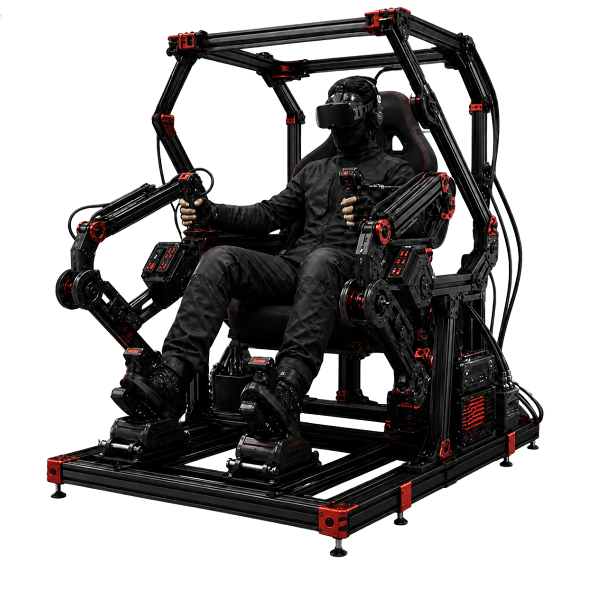

VR presents the robot's view. Leader arms control available manipulators. Foot pedals provide locomotion or task-specific input.
A.T Matrix Studio · Research prototype
One interface.
Different robot forms.
ARGUS combines a VR view, leader arms and foot pedals at the operator station. Through dimOS, it connects robot video, sensor data and control. The goal is to let operators move between task-specific platforms and intervene safely when automation reaches its limits.
ARGUS is currently a research integration project. VR streaming and selected sensor readings work today; common control mapping, multi-robot coordination and field reliability still require validation.

Cockpit concept01multimodal operator station
03current research platforms
02new platforms in assembly
01 / POSITION
ARGUS studies the control layer across robots.
Robots have different bases, arms and sensors. ARGUS aims to give operators a consistent experience while recognising that each platform needs its own adapter and safety validation.
The same VR, arm and pedal inputs are remapped to each robot's capabilities. ARGUS is not another robot; it is an operator gateway designed to expand over time.
dimOS provides the foundation for data and command connections. Each robot receives a capability description, command mapping, telemetry return path and safety limits.
For which tasks can ARGUS be faster, more accurate or easier to learn than a monitor and handheld controller? The answer must come from task evidence, not immersion alone.
02 / ARCHITECTURE
From human motion to robot action.
This is the target architecture. Each layer defines a development responsibility; it does not imply that every platform already has end-to-end control.
Operator input
VR head direction, leader-arm poses and foot-pedal locomotion commands.
ARGUS mapping layer
Translates commands for each robot and manages speed limits, control authority and stop conditions.
dimOS connection layer
Carries streams, sensor data and control channels. Each platform still needs a compatible adapter.
Robot platforms
Aloha Mini, the four-arm mobile platform and Unitree Go2, followed by Pupper V3 and Open Duck Mini.
Returned to the operator: camera video, sensor readings, robot state and control feedback. VR streaming and selected sensor data have been demonstrated.
Verified: demonstrable prototypeIn progress: integration or testingPlanned: no end-to-end validation yet
03 / ROBOT FLEET
Different bodies test one control concept.
The team will establish reliable operation on one platform first, then measure the effort required to add each new robot.
Aloha Mini
Two SO-101 arms, a lifting structure and an omnidirectional base for close-range indoor bimanual research.
Validation focus · Dual-arm pose mapping, lifting and base control.
Four-arm mobile platform
An Aloha Mini research extension using a larger purchased base and four SO-101 arms to explore longer-range mobility and multi-arm operation.
Validation focus · Control allocation, synchronisation and collision prevention.
Unitree Go2
A quadruped platform for inspection and remote perception demonstrations. The team is developing its data and control connection through dimOS.
Validation focus · Stable streaming, state monitoring and human takeover during exceptions.
Pupper V3
A compact quadruped research platform for comparing a second legged-robot interface and testing portability.
Next step · Define basic motion and returned data after assembly.
Open Duck Mini
A small biped character platform for studying expressive motion, balance control and embodied interaction.
Next step · Establish safe motion before evaluating ARGUS control.
Capability-led adaptation
For a new robot, the team first identifies its video, mobility, manipulation, sensing and stop capabilities, then selects the cockpit modules that create real value.
Principle · A dimOS connection is not the same as plug and play.
04 / CURRENT STATE
Separate what works from what comes next.
External demonstrations should state only repeatable results. These labels should be updated as the team produces new test evidence.
Demonstration foundation
- Cockpit concept and hardware arrangement: VR, leader arms and foot pedals.
- VR video streaming.
- Selected robot sensor readings.
- Three current research robot bodies.
End-to-end connection
- More complete data and command channels through dimOS.
- Platform-specific locomotion, view and arm mappings.
- Status UI, stream stability and connection management.
- Pupper V3 and Open Duck Mini assembly.
From prototype to usable system
- Latency, accuracy, disconnection and emergency stop behaviour.
- Four-arm synchronisation and collision limits.
- Robot switching and one-to-many supervision.
- Task value compared with monitors and handheld controllers.
Current evidence supports the description “a multimodal robot-control and connection research prototype.” Stable cross-platform control and commercial deployment remain future validation goals.
05 / ROADMAP
Prove value through measurable demonstrations.
Start with a reliable single-robot loop, then expand to bimanual, multi-arm and new robot forms. Every step should leave reviewable acceptance evidence.
Go2 perception and state baseline
Organise video, sensors, battery and connection state. Record latency and disconnection behaviour.
Gate: repeat the same inspection demonstration reliably.Human-takeover loop
Implement control handover, motion limits and emergency stop, then compare standard UI and cockpit operation.
Gate: take over safely during a defined exception.SO-101: two arms to four
Validate two-arm mapping on Aloha Mini before designing four-arm allocation and collision prevention.
Gate: complete a clearly defined mobile manipulation task.Expand to new robot forms
Create capability profiles and adapters for Pupper V3 and Open Duck Mini, then measure what can be reused.
Gate: quantify the time and changes required for each new platform.06 / NEXT PITCH
The demonstration must answer one question.
Next validation round
When is the ARGUS cockpit worth using?
Choose a real task and compare monitor/controller operation with VR, leader arms and foot pedals. Measure completion time, errors, learning time and operator workload.
- Use the same task and operator conditions.
- Record time, success rate and safety events.
- Keep only the control modules with measurable benefit.
“ARGUS is building an extensible robot-operation layer, allowing a person to enter the most suitable robot when judgement and dexterous control are required.”
Today there is a prototype, initial streaming and data return. The next milestone is task-level evidence from an end-to-end controlled comparison.